Актуальность работы обусловлена ростом объема данных в страховании и необходимостью точнее оценивать индивидуальный риск клиента. Методы машинного обучения позволяют учитывать совместное влияние демографических и поведенческих факторов, благодаря чему расчет страховой стоимости становится более обоснованным. [1]
Цель работы - построить и сопоставить модели регрессии для прогнозирования стоимости медицинской страховки (charges), а также определить признаки, которые сильнее всего влияют на результат. В качестве факторов рассматриваются возраст клиента (age), индекс массы тела (bmi), количество детей (children), пол (sex), факт курения (smoker) и регион проживания (region).
Исследование проводилось последовательно. После разведочного анализа и предобработки данных было построено одиночное дерево решений, затем ансамбли Bagging и Random Forest, а на заключительном этапе - модель XGBoost. Разделение на train, validation и test позволило отделить подбор гиперпараметров от итоговой оценки качества и проверить модели на переобучение.
Решается задача регрессии: по характеристикам клиента требуется предсказать непрерывную величину стоимости медицинской страховки (charges). Исходный датасет включает 1338 наблюдений и 7 столбцов, из которых шесть являются входными признаками, а один - целевой переменной. [9]
К количественным признакам относятся возраст клиента (age), индекс массы тела (bmi) и количество детей (children). Пол клиента (sex), факт курения (smoker) и регион проживания (region) представлены категориальными признаками. Фрагмент исходных данных приведен на рисунке 1.
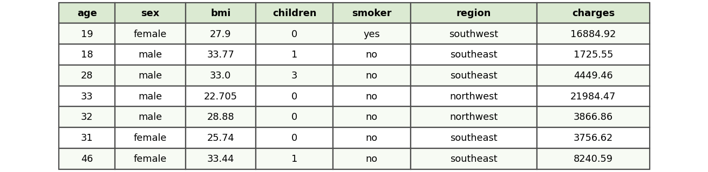
В исходном наборе одновременно присутствуют числовые и строковые значения. До передачи данных моделям категориальные столбцы необходимо преобразовать в числовую форму, сохранив содержательный смысл категорий.
Проверка целостности показала отсутствие пропущенных значений, поэтому заполнение данных не потребовалось. Вместе с тем выражение (df.duplicated().sum()) обнаружило 1 полностью повторяющуюся строку. Она была удалена, и в дальнейшей работе использовались 1337 уникальных наблюдений.
missing_by_column = df.isna().sum() duplicate_count = df.duplicated().sum() df = df.drop_duplicates().reset_index(drop=True)
До построения моделей были определены показатели, по которым будет оцениваться результат. Использовалось несколько метрик, поскольку одна величина не отражает все стороны ошибки. Коэффициент детерминации (R2) показывает долю вариации целевой переменной, объясненную моделью. Средняя абсолютная ошибка (MAE) характеризует типичное отклонение прогноза в долларах и сравнительно слабо зависит от единичных крупных промахов. [1], [2]
Среднеквадратическая ошибка (MSE) сильнее штрафует крупные ошибки, что важно для дорогих страховых случаев. Корень из среднеквадратической ошибки (RMSE) возвращает этот показатель в исходные единицы измерения. Средняя абсолютная процентная ошибка (MAPE) дополняет анализ относительной величиной ошибки, однако для небольших значений стоимости (charges) ее следует трактовать осторожно: деление на малое фактическое значение может непропорционально увеличить процентную ошибку.
Все метрики рассчитывались после обратного преобразования прогнозов в исходную шкалу стоимости. Их сопоставление на train, validation и test использовалось одновременно для ранжирования моделей и оценки устойчивости результатов.
После удаления повторяющейся строки были рассчитаны описательные статистики стоимости страховки (charges), представленные в таблице 1. Затем форма распределения и высокие значения были исследованы графически средствами Matplotlib и Seaborn. [6], [7]
| Статистика | Значение |
|---|---|
| Среднее | 13 279.12 |
| Медиана | 9 386.16 |
| Мода (оценка KDE) | 5 770.63 |
| Дисперсия | 146 660 811.01 |
| Стандартное отклонение | 12 110.36 |
| Коэффициент вариации | 91.2% |
| Минимум | 1 121.87 |
| Максимум | 63 770.43 |
Стандартное отклонение (12 110.36 доллара) сопоставимо со средним значением (13 279.12 доллара), а коэффициент вариации равен 91.2%. Это характеризует высокий относительный разброс, но само по себе не определяет направление асимметрии. О правосторонней асимметрии свидетельствуют среднее, превышающее медиану (9 386.16 доллара), положительный коэффициент асимметрии и длинный хвост дорогих случаев до 63 770.43 доллара. Поскольку все точные значения (charges) уникальны, мода непрерывной переменной оценивалась как максимум ядерной оценки плотности KDE; получено значение около 5 770.63 доллара. Такая оценка показывает наиболее плотную область распределения и зависит от выбранной ширины сглаживания. [10]
Распределение представлено на рисунке 3: основная часть наблюдений сосредоточена в нижнем диапазоне, тогда как небольшая группа дорогих случаев формирует длинный правый хвост, что отражено в таблице 1 и выводах в п. 1.
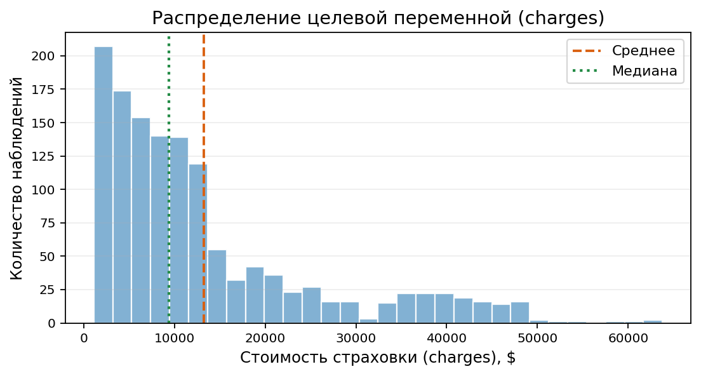
На гистограмме среднее (13 279.12 доллара) расположено правее медианы (9 386.16 доллара). Коэффициент асимметрии равен 1.52: положительное значение соответствует длинному правому хвосту, поэтому исходное распределение имеет выраженную правостороннюю асимметрию.
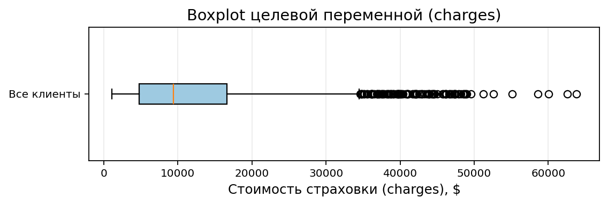
Диаграмма размаха выделяет группу высоких значений за верхней границей. Однако положение точки за границей диаграммы само по себе не означает ошибку: необходимо проверить, объясняются ли такие значения характеристиками клиентов.
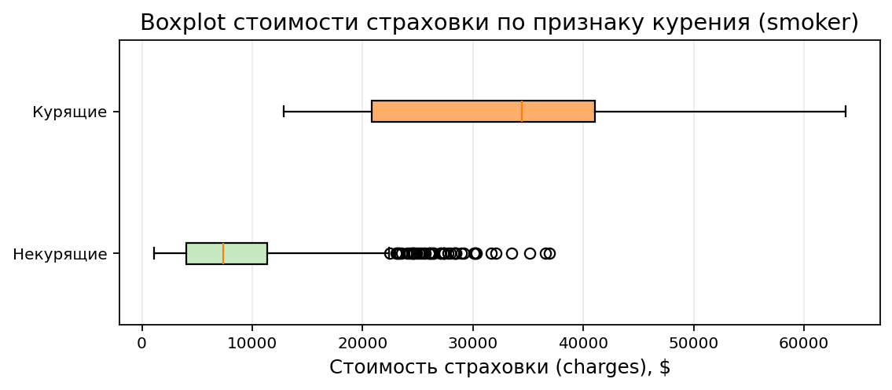
Стоимость выше 35 000 долларов имеют 133 объектов, или 9.9% выборки. Среди них 97.7% являются курильщиками. Поэтому большинство высоких значений отражает реальную закономерность для группы (smoker = yes), а не ошибки измерения; удалять их не следует.
Чтобы уменьшить влияние длинного правого хвоста, модель обучалась на логарифме стоимости. К исходной величине прибавлялась единица, что делает преобразование корректным и для нулевых значений. После прогноза выполнялось обратное преобразование, поэтому метрики рассчитывались в долларах. [5]
df['charges_original'] = df['charges'] df['charges'] = np.log1p(df['charges']) # обратное преобразование после прогноза y_pred = np.expm1(model.predict(X_test))
После логарифмирования коэффициент асимметрии снизился с 1.52 до -0.09. Распределение стало значительно ближе к симметричному, а редкие дорогие полисы перестали чрезмерно доминировать в функции потерь.
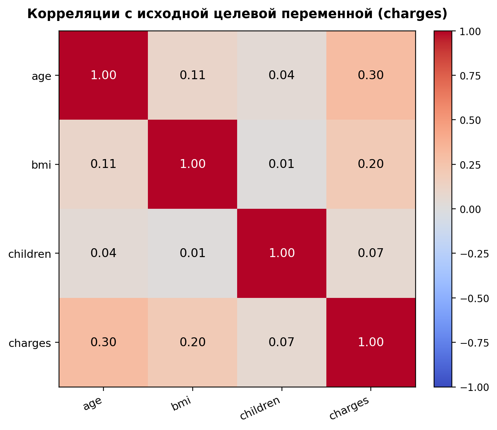
Для исходной стоимости наиболее заметна связь с возрастом клиента (age), однако ее коэффициент составляет только около 0,30. Умеренное значение коэффициента Пирсона может говорить о том, что связь нелинейна или зависит от взаимодействия возраста с курением и другими признаками, поскольку корреляция отражает только линейную составляющую зависимости. Между самими количественными признаками сильных линейных зависимостей не обнаружено.
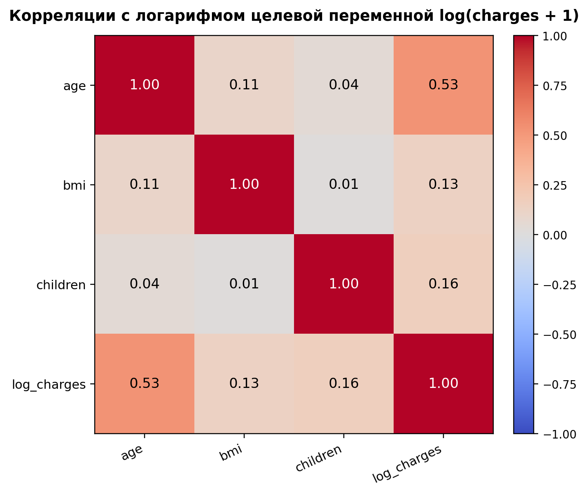
После логарифмирования связь возраста (age) с целевой переменной возрастает примерно до 0,53. Линейная связь с индексом массы тела (bmi) и количеством детей (children) остается слабой. Это не исключает их влияния, а может говорить о нелинейном характере связи, который далее проверяется моделями на основе деревьев.
Категориальные признаки (sex), (smoker) и (region) были преобразованы с помощью OneHotEncoder. Кодировщик обучался только на тренировочной части, что исключает перенос информации из validation и test в этап подготовки признаков. [2], [4]
Стандартная стратификация для непрерывной целевой переменной невозможна. Поэтому упорядоченные значения (charges) были разбиты на пять интервалов (bins) с примерно одинаковым количеством объектов. Номер интервала объединялся с категорией (smoker), благодаря чему в train, validation и test сохранялись доля курильщиков и представительство разных диапазонов стоимости. Фрагмент кода разделения приведен на рисунке 8.
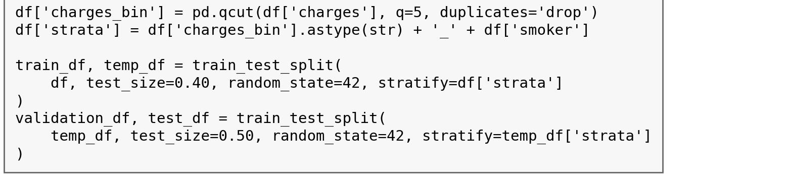
| Выборка | Количество объектов | Доля |
|---|---|---|
| Train | 801 | 60% |
| Validation | 268 | 20% |
| Test | 268 | 20% |
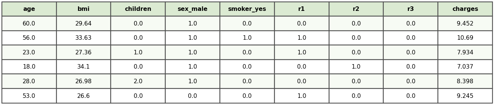
После OneHotEncoding сформировано 8 входных признаков. Обозначения регионов: (r1) - northwest, (r2) - southeast, (r3) - southwest; регион northeast является базовой категорией и задается нулями во всех трех столбцах. Поле (charges) содержит логарифмированный таргет, а исходная стоимость хранится в (charges_original). Таким образом, после предобработки получен набор из 1337 уникальных наблюдений без пропусков; комбинированная стратификация обеспечила близкую структуру train, validation и test, а содержательно объяснимые дорогие случаи были сохранены.
Дерево решений формирует прогноз с помощью последовательных разбиений пространства признаков. В каждом узле алгоритм выбирает локально лучшее условие по критерию ошибки. Такая модель хорошо интерпретируется, но без ограничений может создавать листья для отдельных наблюдений и запоминать тренировочную выборку. [1], [2]
Неограниченное дерево достигло глубины 20. На train оно получило R2 = 0.9992 и RMSE = 348.18, тогда как на test R2 снизился до 0.6617, а RMSE вырос до 6 635.40. Разрыв R2 составил 0.3375, что указывает на выраженное переобучение.
Неограниченное дерево имеет низкое смещение, но высокий разброс. Ограничение глубины и размеров листьев немного увеличивает смещение, зато снижает чувствительность к конкретному составу train.
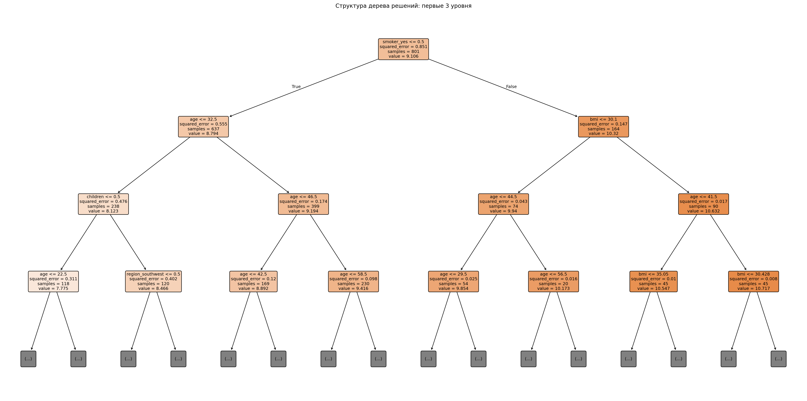
В каждом узле показано условие разбиения, а движение по ветвям последовательно сужает группу объектов. Для читаемости приведены только первые три уровня полного дерева.
Для настройки применялись GridSearchCV и пятиблочная кросс-валидация KFold с перемешиванием. Двухэтапный поиск означает, что сначала широкая сетка с крупным шагом определяет перспективную область параметров, а затем уточненная сетка проверяет соседние значения с меньшим шагом. В данном случае после широкого поиска глубина и размеры узлов проверялись с шагом 1 рядом с найденным оптимумом. Validation в поиске гиперпараметров не участвовала и использовалась для независимой оценки модели.
coarse_grid = {
'max_depth': [2, 4, 6, 8, 10, 12, 16, None],
'min_samples_split': [2, 10, 20, 40],
'min_samples_leaf': [1, 4, 8, 16],
'criterion': ['squared_error', 'absolute_error'],
'ccp_alpha': [0.0, 0.0001]
}
cv = KFold(n_splits=5, shuffle=True, random_state=42)
grid = GridSearchCV(tree, coarse_grid, cv=cv, scoring=r2_original_scorer)На рисунке 12 представлены значения гиперпараметров оптимизированного дерева.
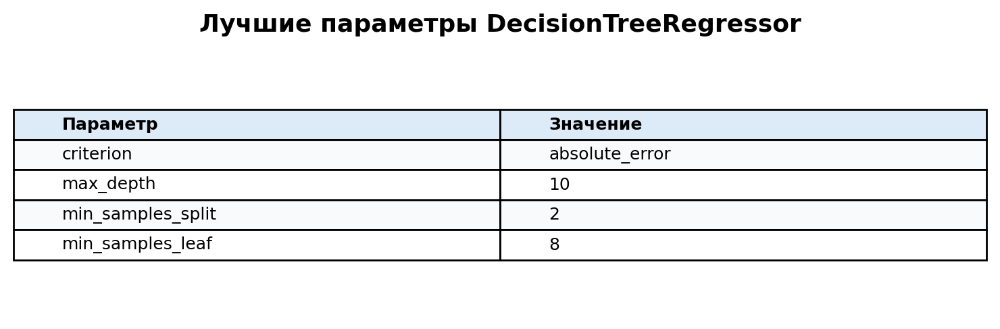
После двухэтапного поиска выбрана глубина 10. Параметры минимального размера узлов и стоимость отсечения (ccp_alpha) ограничивают дробление дерева и уменьшают его разброс.
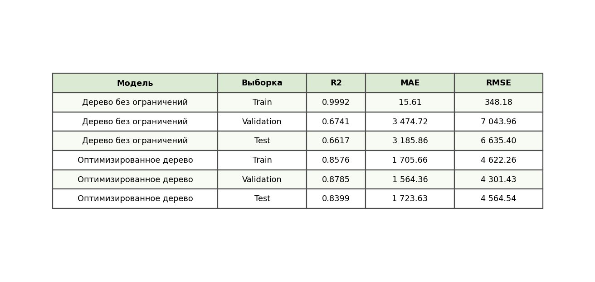
После оптимизации дерева R2 составил 0.8576 на train, 0.8785 на validation и 0.8399 на test. Ограничения почти не ухудшили test, но резко сократили разрыв с train, то есть уменьшили разброс модели.
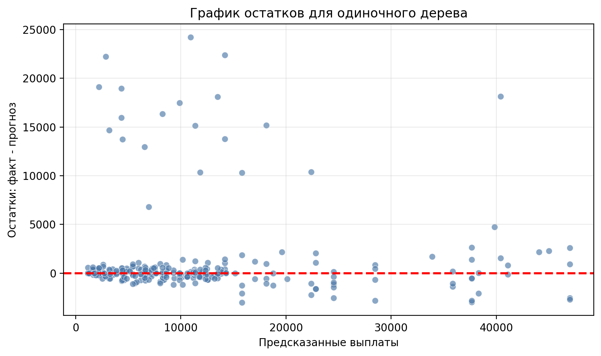
Большинство остатков сосредоточено около нуля, поэтому модель улавливает основную зависимость. Для полисов с фактической стоимостью не выше 20 000 долларов стандартное отклонение остатков равно 1 788.44, а MAE - 623.77. Для более дорогих полисов эти значения возрастают до 8 214.87 и 5 983.08 соответственно. Следовательно, разброс ошибок действительно увеличивается в дорогом сегменте. Полосы точек возникают из-за одинакового прогноза для объектов одного листа.
Двухэтапная настройка сохранила интерпретируемость дерева и заметно уменьшила переобучение. Однако чувствительность к дорогим случаям показала, что дальнейшее улучшение целесообразно искать в ансамблях, снижающих разброс модели.
В Bagging каждое дерево обучается на собственной bootstrap-подвыборке, после чего прогнозы усредняются. Bootstrap-подвыборка формируется случайным извлечением объектов исходной train-выборки с возвращением: один объект может встретиться несколько раз, а часть наблюдений не попадает в конкретную подвыборку. Поэтому деревья получают различающиеся обучающие данные, а усреднение их прогнозов снижает разброс ансамбля. Random Forest дополнительно ограничивает набор признаков, доступных при поиске разбиения. Это делает отдельные деревья менее похожими друг на друга и повышает устойчивость совместного прогноза. Для корректного сравнения использовались те же признаки, логарифмированный таргет и разбиение данных. [1], [2]
С помощью двухэтапной процедуры GridSearchCV были подобраны число деревьев (n_estimators), доля объектов (max_samples), доля признаков (max_features), глубина и минимальный размер узлов базового дерева. После широкого поиска на грубой сетке уточненная сетка строилась около лучших значений.
bagging_grid = {
'n_estimators': [50, 100, 200],
'max_samples': [0.6, 0.8, 1.0],
'max_features': [0.6, 0.8, 1.0],
'estimator__max_depth': [4, 6, 8, 10, None],
'estimator__min_samples_split': [2, 10, 20],
'estimator__min_samples_leaf': [1, 4, 8]
}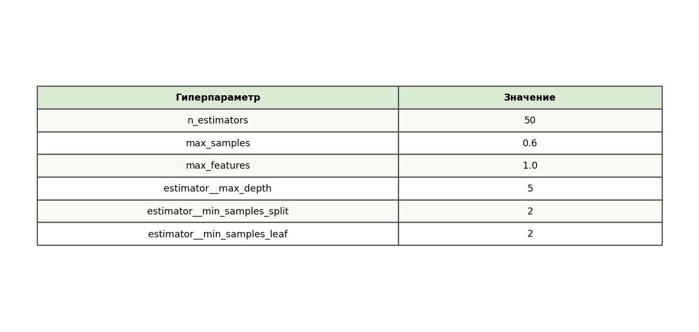
Итоговая конфигурация дерева определяет разнообразие базовых деревьев и объем данных для каждого из них. На тестовой выборке модель показала R2 = 0.8475 и RMSE = 4 454.60, улучшив оба показателя относительно оптимизированного дерева.
Random Forest оптимизировался по той же двухэтапной схеме. Помимо числа и глубины деревьев, параметр (max_features) задавал случайную долю признаков, доступных при разбиении, а (bootstrap) включал выбор объектов с возвращением.
rf_grid = {
'n_estimators': [100, 200],
'max_depth': [4, 6, 8, 10, 12, None],
'min_samples_split': [2, 10, 20],
'min_samples_leaf': [1, 4, 8],
'max_features': ['sqrt', 0.7, 1.0],
'bootstrap': [True],
'ccp_alpha': [0.0, 0.0001]
}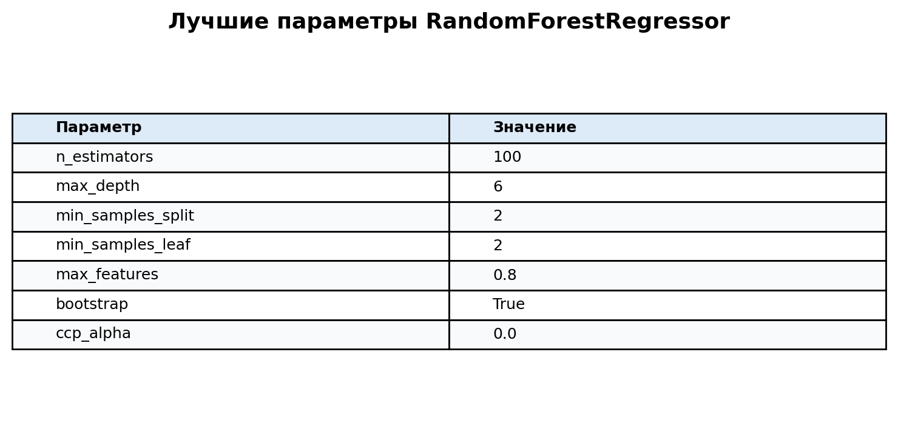
Параметр (max_features) управляет декорреляцией деревьев: слишком малое значение повышает разнообразие, но может ухудшить отдельные разбиения. На тестовой выборке Random Forest показал R2 = 0.8485 и RMSE = 4 440.05.
OOB-score (out-of-bag score) - это внутренняя оценка качества bootstrap-ансамбля. Каждое дерево обучается на случайной выборке объектов с возвращением, поэтому часть наблюдений в его обучающую подвыборку не попадает. Для каждого объекта прогноз усредняется только по тем деревьям, которые этот объект не использовали при обучении; полученная оценка по смыслу напоминает проверку на отложенных данных и не требует выделять еще одну выборку. Чем ближе OOB R2 к результатам KFold и test, тем устойчивее выглядит оценка качества модели. Для одиночного дерева OOB-score не определен, поскольку оно не является bootstrap-композицией. [2]
bagging_oob = BaggingRegressor(
estimator=best_tree, n_estimators=best_n,
bootstrap=True, oob_score=True, random_state=42
)
rf_oob = RandomForestRegressor(
n_estimators=best_n, bootstrap=True,
oob_score=True, random_state=42
)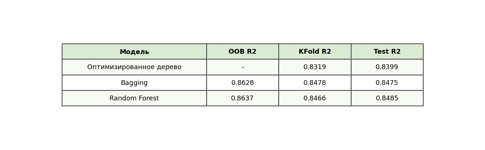
Для Bagging OOB R2 равен 0,8628 против 0,8478 по KFold, для Random Forest - 0,8637 против 0,8466. Тестовые значения 0,8475 и 0,8485 близки к KFold, поэтому общий вывод о качестве не зависит от одной процедуры валидации.
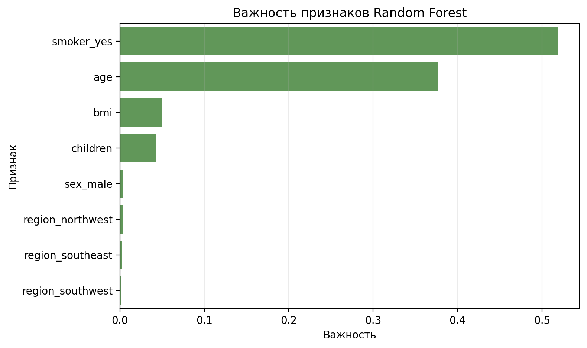
Наибольший вклад в Random Forest имеют факт курения (smoker_yes) и возраст (age). Далее следуют индекс массы тела (bmi) и количество детей (children), причем оба признака дают заметный, но существенно меньший вклад. Пол и регион влияют слабо. Результат согласуется с предварительным анализом данных.
Модели Bagging и Random Forest улучшили R2 и RMSE относительно оптимизированного дерева, сохранив близкие результаты на train, validation и test. Небольшая разница между ансамблями может объясняться сильным влиянием курения: даже при случайном выборе признаков модели часто приходят к похожим ключевым разбиениям.
В отличие от Bagging и Random Forest, градиентный бустинг строит деревья последовательно: каждое новое дерево направлено на исправление ошибок уже сформированного ансамбля. В работе использовалась модель XGBRegressor из библиотеки XGBoost. [1], [3]
На каждом шаге вычисляются псевдоостатки, задающие направление уменьшения функции потерь. Для квадратичной ошибки они совпадают с обычными остатками. Новое дерево приближает эти значения, а величина его вклада регулируется скоростью обучения (learning_rate).
Сначала RandomizedSearchCV проверил 60 комбинаций на пяти блоках KFold, затем еще 50 комбинаций были исследованы около лучшего решения. Средний CV R2 вырос с 0.8399 до 0.8426; наилучшее качество на validation достигнуто примерно после 648 деревьев.
xgb_grid = {
'n_estimators': [150, 250, 400, 600, 800],
'learning_rate': [0.01, 0.02, 0.03, 0.05, 0.08],
'max_depth': [2, 3, 4, 5],
'min_child_weight': [1, 3, 5, 8],
'subsample': [0.7, 0.8, 0.9, 1.0],
'colsample_bytree': [0.7, 0.8, 0.9, 1.0],
'reg_lambda': [0.5, 1, 3, 5, 10],
'reg_alpha': [0, 0.01, 0.1, 0.5]
}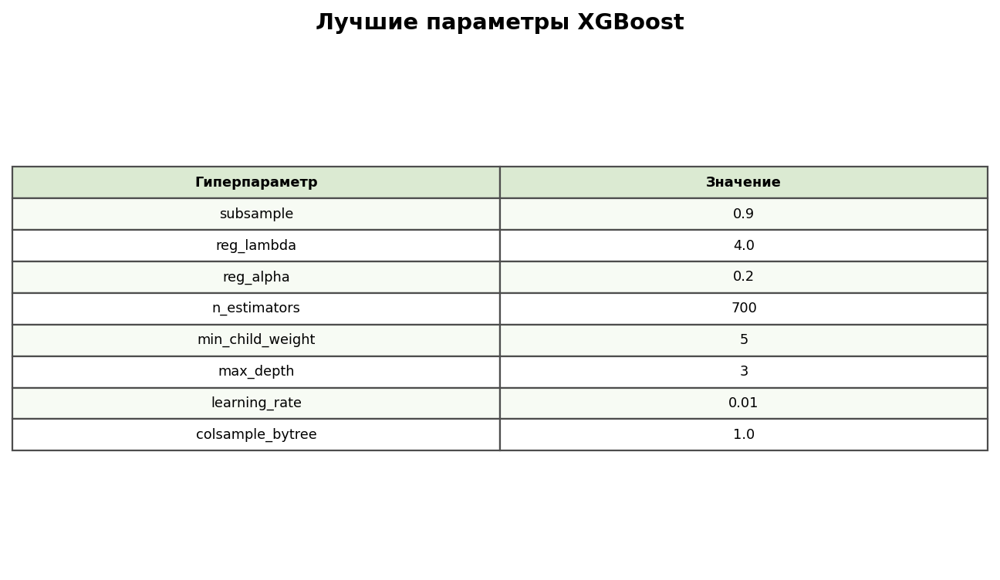
Небольшая скорость обучения (learning_rate = 0,01), глубина 3 и регуляризация обеспечивают постепенное улучшение прогноза без чрезмерно сложных отдельных деревьев.
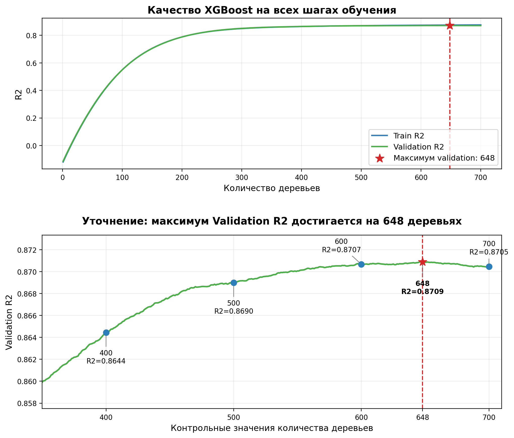
На увеличенном участке показаны контрольные значения Validation R2: 400 деревьев - 0.8644, 500 - 0.8690, 600 - 0.8707, 648 - 0.8709, 700 - 0.8705. Качество растет до 648 деревьев, где достигается максимум, а затем немного снижается; поэтому выбрано именно 648 деревьев.
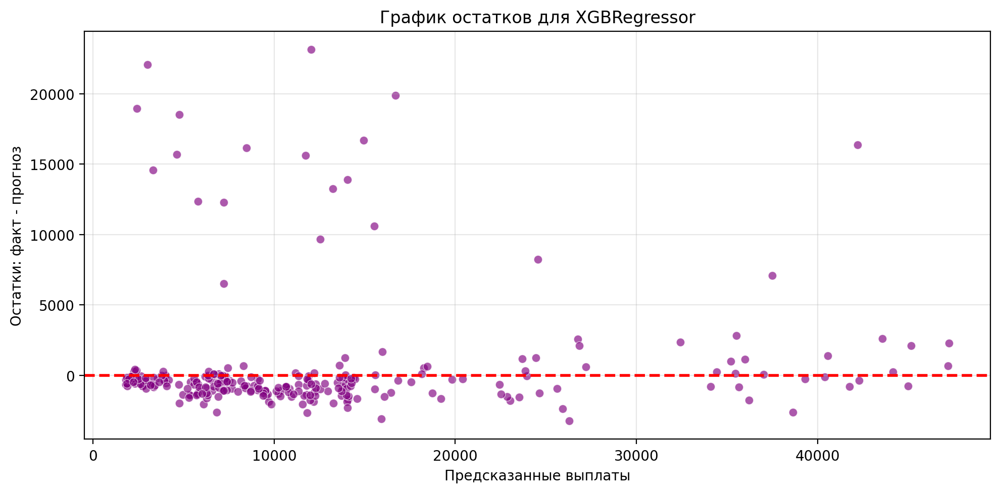
Облако остатков в основном центрировано около нуля, поэтому общего систематического смещения не наблюдается. Для полисов с фактической стоимостью не выше 20 000 долларов стандартное отклонение остатков равно 1 828.46, а MAE - 992.36. В более дорогом сегменте показатели возрастают до 7 556.11 и 5 346.01. Следовательно, XGBoost также ошибается менее стабильно на дорогих полисах, хотя их разброс ниже, чем у оптимизированного дерева.
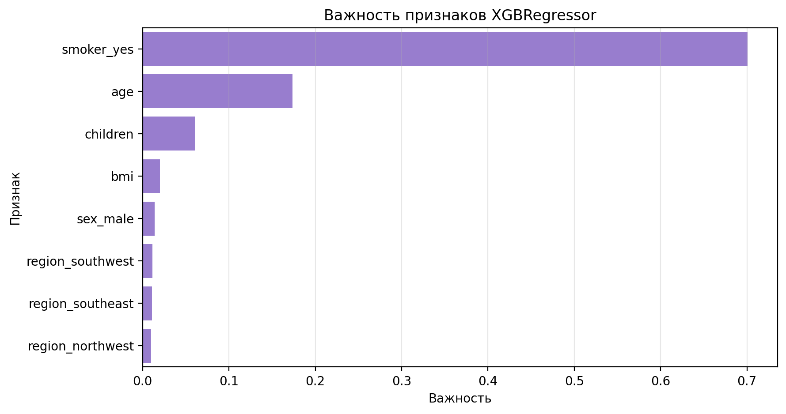
Признак курения (smoker_yes) формирует около 70% суммарной важности. Далее следуют возраст (age), количество детей (children) и индекс массы тела (bmi). Это подтверждает гипотезу EDA о сильном влиянии курения.
На test XGBoost достиг R2 = 0.8579 и RMSE = 4 300.09, показав лучший результат по этим двум метрикам. Близкие значения R2 на train (0.8733), validation (0.8914) и test не указывают на выраженное переобучение.
Итоговое сравнение выполнялось на неизменных выборках. Test не участвовала ни в обучении, ни в подборе гиперпараметров и поэтому служила основной оценкой обобщающей способности. Помимо метрик анализировались остатки, фактические и предсказанные значения, важность признаков, SHAP и скорость инференса.
| Модель | Выборка | R2 | MAE | MSE | RMSE | MAPE |
|---|---|---|---|---|---|---|
| Оптимизированное дерево | Train | 0.8576 | 1 705.66 | 2.14e+07 | 4 622.26 | 9.90% |
| Оптимизированное дерево | Validation | 0.8785 | 1 564.36 | 1.85e+07 | 4 301.43 | 9.71% |
| Оптимизированное дерево | Test | 0.8399 | 1 723.63 | 2.08e+07 | 4 564.54 | 10.38% |
| Bagging | Train | 0.8756 | 1 954.27 | 1.87e+07 | 4 319.79 | 16.32% |
| Bagging | Validation | 0.8918 | 1 817.67 | 1.65e+07 | 4 058.75 | 15.91% |
| Bagging | Test | 0.8475 | 2 010.78 | 1.98e+07 | 4 454.60 | 17.11% |
| Random Forest | Train | 0.8855 | 1 838.33 | 1.72e+07 | 4 144.22 | 15.39% |
| Random Forest | Validation | 0.9006 | 1 683.34 | 1.51e+07 | 3 889.85 | 14.77% |
| Random Forest | Test | 0.8485 | 1 964.76 | 1.97e+07 | 4 440.05 | 16.91% |
| XGBoost | Train | 0.8733 | 1 962.75 | 1.90e+07 | 4 359.46 | 15.82% |
| XGBoost | Validation | 0.8914 | 1 805.61 | 1.65e+07 | 4 065.35 | 14.63% |
| XGBoost | Test | 0.8579 | 1 885.83 | 1.85e+07 | 4 300.09 | 15.87% |
Таблица 3 позволяет одновременно сравнить итоговое качество и разрыв между выборками. Все значения рассчитаны в исходной шкале после преобразования exp(prediction) - 1.
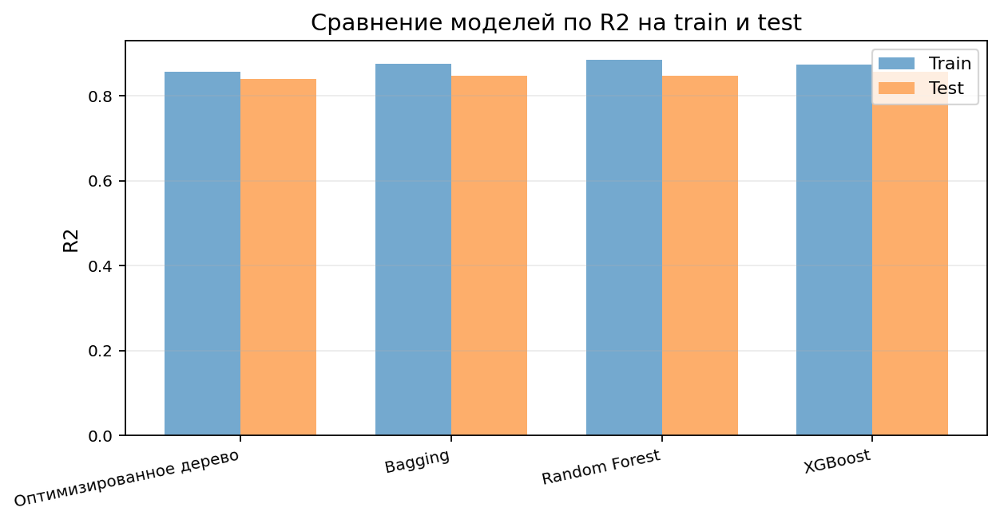
У всех оптимизированных моделей разрыв между train и test остается умеренным. Несмотря на то что метрики соизмеримы, наименьшая разница между метрикой R2 на обучающей и тестовой выборках наблюдается у модели XGBoost, тогда как у Random Forest различие между train и test немного больше, чем у остальных ансамблей.
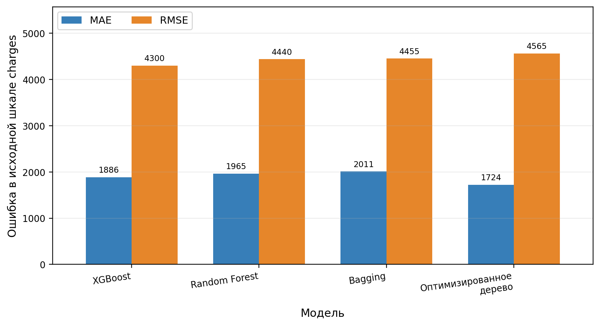
RMSE находится в узком диапазоне примерно от 4 300 до 4 565 долларов. Все модели используют одни признаки и сталкиваются с одинаковыми редкими дорогими случаями, которые сильнее всего влияют на квадрат ошибки. У оптимизированного дерева MAE ниже, но RMSE выше, то есть большинство прогнозов близки к факту, однако отдельные крупные промахи сильнее ухудшают результат.
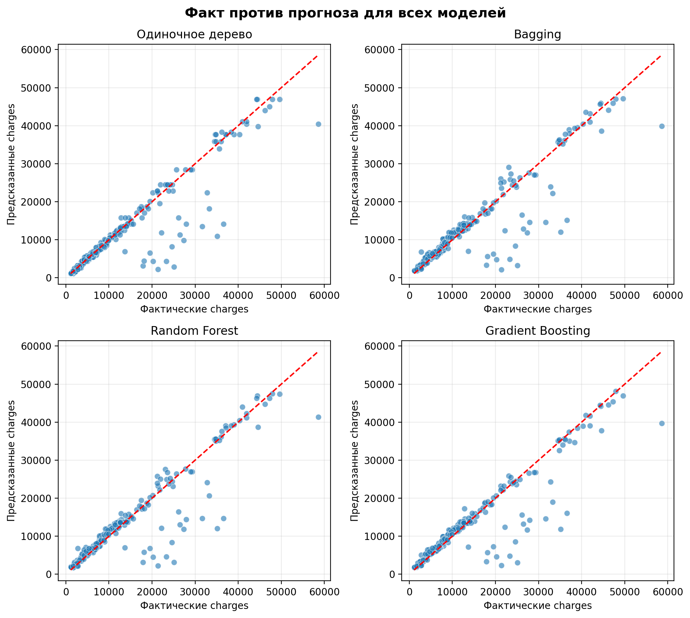
Чем ближе точки к диагонали, тем точнее прогноз. XGBoost формирует наиболее компактное облако, но в верхнем диапазоне стоимости все модели чаще отклоняются от идеальной линии.
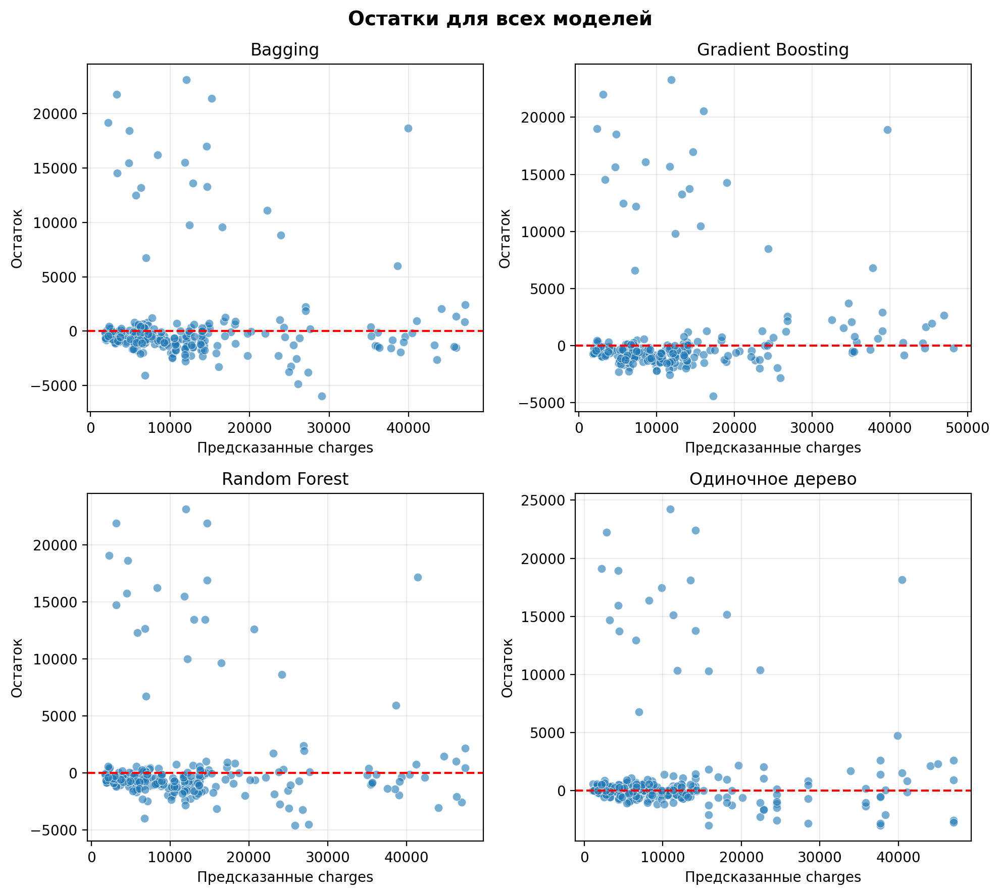
У ансамблей облака остатков более сглажены, чем у одиночного дерева, а постоянного смещения относительно нуля не видно. Расширение облака справа подтверждает, что дорогие полисы остаются общей сложной областью.
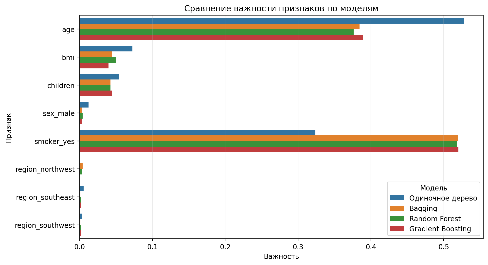
Во всех ансамблях главным фактором остается курение (smoker_yes), далее обычно следуют возраст (age) и индекс массы тела (bmi). Пол и регион практически не влияют на целевую переменную, что согласуется с предварительным анализом.
SHAP (SHapley Additive exPlanations) - метод интерпретации, который раскладывает отдельный прогноз модели на базовое значение и вклады признаков. Положительное SHAP-значение повышает прогноз относительно базового уровня, отрицательное - понижает, а абсолютная величина показывает силу влияния признака для конкретного объекта. Обобщение таких значений по всей выборке позволяет оценить глобальную важность и направление воздействия признаков. [8]
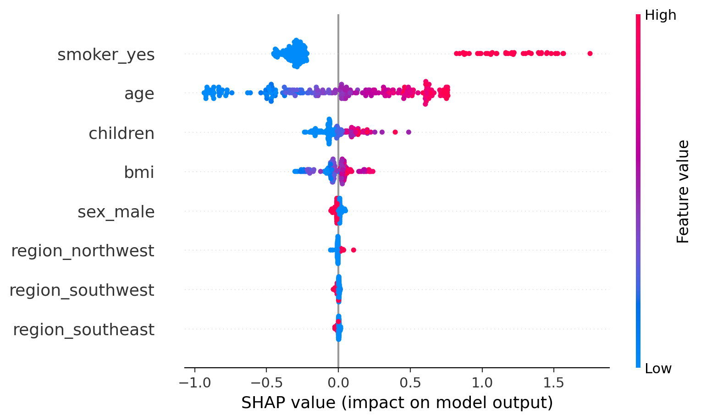
SHAP показывает не только силу, но и направление влияния. Курение и больший возраст чаще сдвигают прогноз log(charges + 1) вверх, что дополняет встроенную важность признаков содержательной интерпретацией.
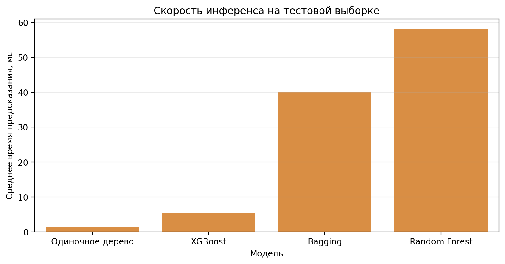
Одиночное дерево прогнозирует быстрее всего, XGBoost занимает промежуточное положение, а Bagging и Random Forest требуют больше времени из-за вычисления прогнозов множества деревьев. Для данного небольшого датасета все измеренные значения остаются практически приемлемыми.
В ходе работы был исследован набор из 1338 наблюдений для прогнозирования стоимости медицинской страховки (charges). Пропущенных значений не обнаружено, одна полностью повторяющаяся строка удалена. Категориальные признаки преобразованы методом OneHotEncoding, а данные разделены на train, validation и test с комбинированной стратификацией по интервалам стоимости и признаку курения (smoker).
EDA выявил правостороннюю асимметрию целевой переменной: ее коэффициент составил 1.52. Среди 133 полисов дороже 35 000 долларов доля курильщиков достигла 97.7%, поэтому высокие значения были признаны содержательно объяснимыми и сохранены. Логарифмирование уменьшило асимметрию до -0.09.
На test оптимизированное дерево получило R2 = 0.8399, Bagging - 0.8475, Random Forest - 0.8485, а XGBoost - 0.8579. Лучшей по R2 и RMSE стала модель XGBoost: RMSE составил 4 300.09, MAE - 1 885.83. При этом оптимизированное дерево показало меньшие MAE (1 723.63) и MAPE (10.38%), поэтому выбор модели зависит от того, насколько критичны отдельные крупные ошибки.
Для XGBoost значения R2 на train, validation и test равны 0.8733, 0.8914 и 0.8579. Небольшой разрыв не указывает на выраженное переобучение, а test R2 означает, что модель объясняет около 85.8% вариации стоимости на ранее не использованных данных. Основная часть оставшейся ошибки связана с наиболее дорогими полисами.
Интерпретация лучшей модели согласуется с EDA. Признак курения (smoker_yes) формирует около 70% встроенной важности XGBoost, подтверждая концентрацию дорогих полисов среди курильщиков. Возраст (age) также остается значимым фактором и соответствует наиболее сильной корреляции с log(charges + 1). Индекс массы тела (bmi) и количество детей (children) дают меньший, преимущественно нелинейный вклад, а пол (sex) и регион (region) почти не влияют на прогноз.
В последующих работах настройку XGBoost можно сделать более глубокой. Для этого целесообразно увеличить число проверяемых комбинаций и расширить диапазоны количества деревьев (n_estimators), скорости обучения (learning_rate), глубины (max_depth), минимального веса дочернего узла (min_child_weight), долей объектов и признаков (subsample, colsample_bytree), а также коэффициентов регуляризации (reg_alpha, reg_lambda). После широкого поиска перспективную область следует исследовать с меньшим шагом либо применить байесовскую оптимизацию. Раннее прекращение обучения (early stopping) позволит выбирать число деревьев по качеству на validation, а повторная или вложенная кросс-валидация снизит зависимость результата от одного разбиения данных.
Дополнительный резерв качества связан с данными и постановкой задачи. Полезно добавить сведения о хронических заболеваниях, типе страхового плана, уровне дохода и истории обращений, проверить взаимодействия возраста (age), курения (smoker) и индекса массы тела (bmi), а также отдельно настроить функцию потерь для дорогих полисов. Можно сравнить обучение на исходной и логарифмической шкале, робастные функции потерь и интервальные прогнозы. Каждое улучшение необходимо подтверждать на одной и той же отложенной тестовой выборке, а итоговую модель дополнительно проверять на внешних или более поздних данных.
Итоговой моделью по совокупности R2 и RMSE выбран XGBoost. Оптимизированное дерево остается наиболее простым и быстрым решением, Random Forest дает близкое качество и удобен для OOB- и SHAP-анализа, однако XGBoost лучше всего сокращает крупные ошибки и обеспечивает наиболее высокий test R2.